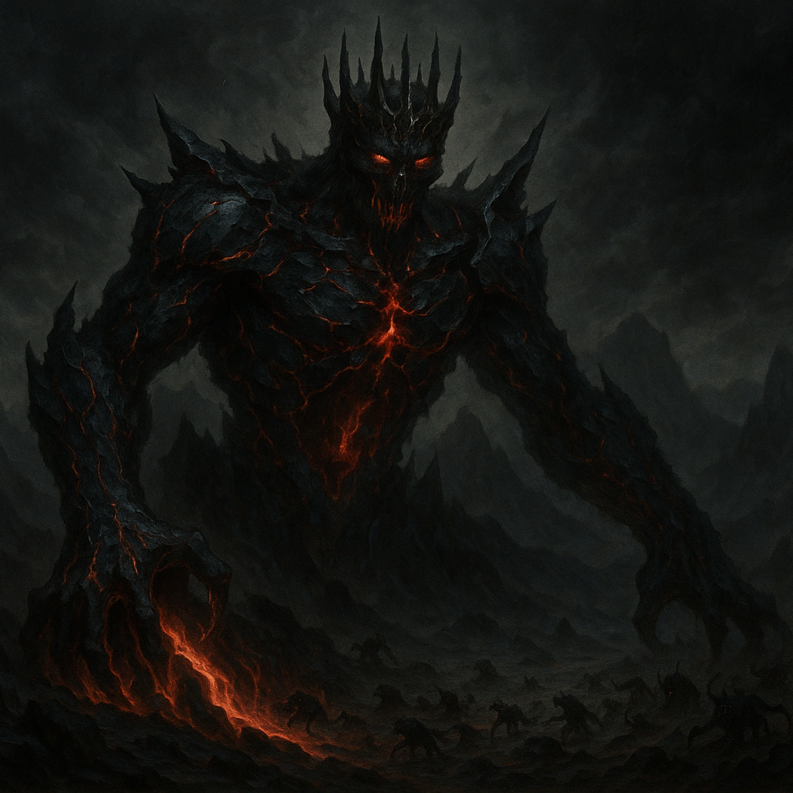

Agnithar, most gifted of the Sunborn, grew restless among the eternal perfection of Caldur's flame. He forged a chariot of living fire from Caldur's own essence and journeyed into the Cold Beyond — a lightless void — where he discovered a barren world of stone and dust.
His arrival fractured the planet's surface, and from the wound rose a volcanic mountain infused with Caldur's fire: The Great Forge. From it he reshaped the world — sparks became stars, smoke became clouds, cooled metal shaped mountains, rivers of molten fire became seas. Yet the world, beautiful as it was, remained lifeless.

Seeking an agent of will in his creation, Agnithar attempted something unprecedented: forging a thinking, divine being from essence rather than matter. Into this creation he poured his own frustration, impatience, and doubt.
Upon completion, the being's initial radiance dimmed — skin became ash and shadow, armor cooled to cracked obsidian, and within burned a deep crimson fire. This was Velthir, the First Apprentice, whose very first act was defiance. He named himself a reflection of Agnithar's flaws.
Unable to destroy Velthir without destroying part of himself, Agnithar sealed the Great Forge and withdrew to reflect. The Age of Darkness had begun.

With Agnithar withdrawn, Velthir walked the newborn world freely and began filling it with creatures of his own design. He forged Hell (the Infernal Planes) within the molten core of the world, ruled by Alazar, Lord of Hell. From his own essence he spawned the chaotic Demonic Horde.
He created the Draconic Diarchies — five chromatic King-Queen pairs ruling separate dominions — and founded the Necrotic Council of the Deathless, nine immortal liches who introduced undeath and necromancy to the world. He also spawned Szarveniss the Serpent Queen, who established the Venomous Court.
Continents sank and rose. The stars dimmed. The world was defined by perpetual conflict.

Agnithar emerged from the Great Forge, choosing refinement through limitation over perfection. He forged four divine beings — not to rule, but to test balance against Velthir's dominion:
Kaestrom, the Tempest — storms, elements, and pure change; acts without malice toward any side.
Morden, the Bloodborn — war, battle, and fearlessness; from him came goblinoids, orcs, and ogres.
Elarea, the Wild — wilderness, nature, and renewal; she spread life across scorched lands and created the elves.
Lorveth, the Shadow — secrets, stealth, and manipulation; she fused existing races with her shadows, spawning dark elves.
Rather than confronting the Flawed Four directly, Velthir spent centuries studying their powers, then struck through corruption. He twisted each god's domain into monstrous reflections: chaotic elementals from Kaestrom's storms, vampire counts from Morden's endless bloodshed, a Great Blight of rot and chimeras from Elarea's wilderness, and a Shadow Realm of specters from Lorveth's darkness. Even Lorveth found her own domain unsafe.
Agnithar re-emerged and forged six new, more refined divine beings — his most stable framework yet:
Grunur (Heir to the Forge) — craftsmanship and labor; created the dwarves.
Sylmera (The Dream-Giver) — dreams, prophecy, and arts; created the somnari.
Barthimir (Keeper of Knowledge) — wisdom and learning; created the gnomes and the Calendar.
Norani (The Traveler) — trade, song, and nomadic life; created the catfolk.
Dalia (Mother of Hearth) — compassion, family, and harvest; created the halflings.
Zerathis (The God-Sorcerer) — magic and time; wove the Weave of Magic and gifted it to all races.

Agnithar applied all wisdom gained from his previous creations and forged one final being — using his remaining divine power and the last embers of Caldur's essence itself. This was Havilar, shaped with balance, purpose, and unity as his very core. He stood as the direct opposite of Velthir: light against shadow, justice against corruption.
Havilar created the race of humans as the embodiment of adaptability and ambition. Spent of all remaining power, Agnithar cast his hammer and anvil into the sky — the twin moons — and retreated into the Great Forge to slumber forever.

Havilar united the Sacred Six and declared open war on Velthir — the Radiant Crusade. He founded the Order of the Dawnflame as his elite military force and constructed the four Bastions of Dawn: Dawnmount, Dawnview, Dawnkeep, and Dawnhold. None ever fell to the enemy.
Havilar and Sylmera sent visions of hope to Lorveth, who defected and became a crucial double agent embedded in Velthir's command — planting the seeds of his downfall.
Havilar's masterstroke: for one year his forces feigned collapse, guided by Lorveth's deception from within Velthir's ranks. Blinded by arrogance, Velthir gathered almost all his armies and marched on the two Havilarian Bastions. To reach Dawnmount, he had to cross a narrow isthmus flanked by cliffs hundreds of meters high.
Grunur had carved vast tunnels inside those cliffs. Zerathis concealed thousands of troops within them with illusions. When Velthir's army stepped onto the isthmus, it was surrounded and trapped. Velthir suffered his first decisive defeat. This battle marks Year 1 AC — the foundational date of the Havilarian Calendar. The city of Havilar's Crossing was later built on the isthmus itself.

Velthir could not be destroyed — all gods share the spark of Caldur and cannot unmake one another. The Sacred Six sacrificed a portion of their own divine essence to reforge Agnithar's ancient chariot and open a portal to a barren prison world.
Havilar secretly planned to go himself. He commandeered the chariot, chained Velthir to it, and departed — becoming Velthir's eternal jailor on what he called the Eternal Battlefield. Before departing, he revealed his secret: he had fathered a demigod son named Agnilar with a mortal woman. He charged the Sacred Six to support his son.
Agnilar — eighteen years old, demigod son of Havilar — was revealed to the Sacred Six and charged with founding mortal civilization. Armed with the Twelve Commandments of the Light, the Radiant Crown bearing the Dawnflame (last ember of Caldur's fire), and the guidance of the weakened Sacred Six, he founded the Empire of Dawn and the Imperial Dynasty of Havilon within Year 1 AC.
Humans, created by Havilar, followed Agnilar almost universally and immediately. The Luminaries were chosen to interpret and enforce the Commandments as both priests and judges. The gods stepped into advisory roles as mortal civilization took hold.

Agnilar still reigns as First Emperor — a demigod who has endured for seven centuries. The Empire spans Havilaria, encompassing the Heartlands, Lowlands, Vale of Dawn, and beyond. The Sacred Six have largely withdrawn from direct governance; only Barthimir still occupies his seat on the Sacred Council.
The single most destabilizing question in the Empire: Agnilar has not named an heir. The Radiant Crown and the Dawnflame await a successor no one has yet been told to expect.